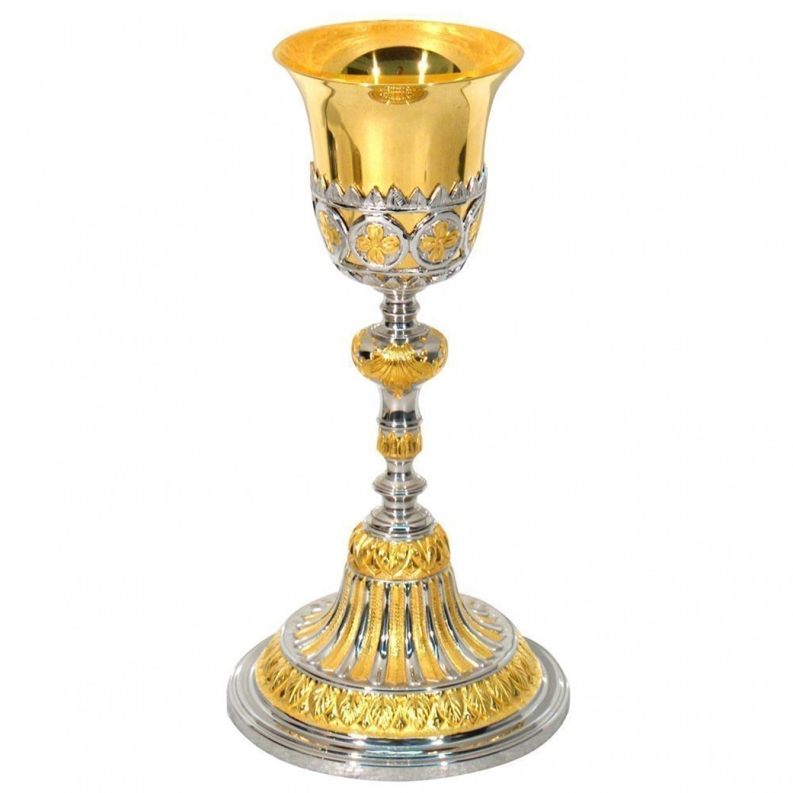
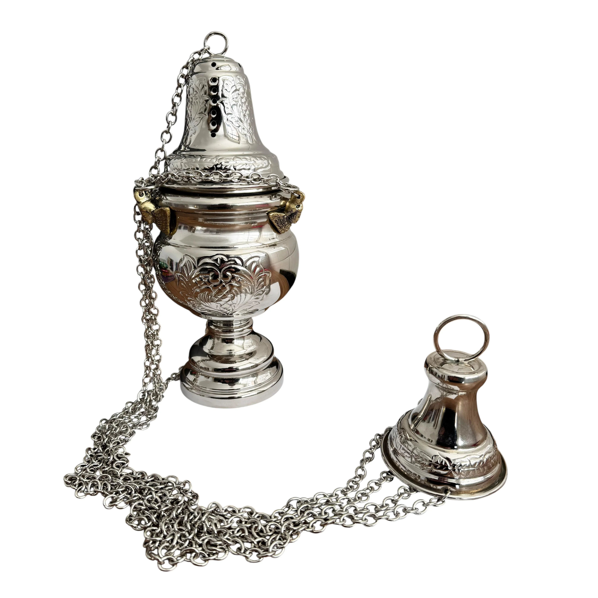
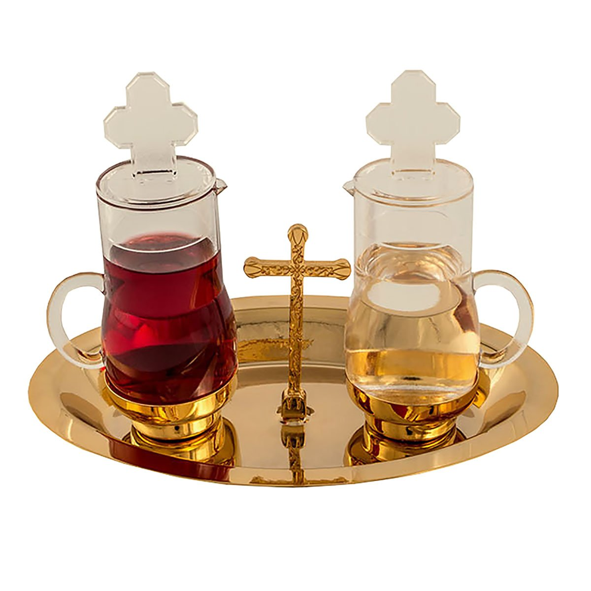

Os objetos litúrgicos são fundamentais na celebração da missa. Cada um possui uma função específica e um significado simbólico.
Eles ajudam a tornar a celebração mais organizada e espiritual. Além disso, representam elementos importantes da fé católica.
Voltar para o início